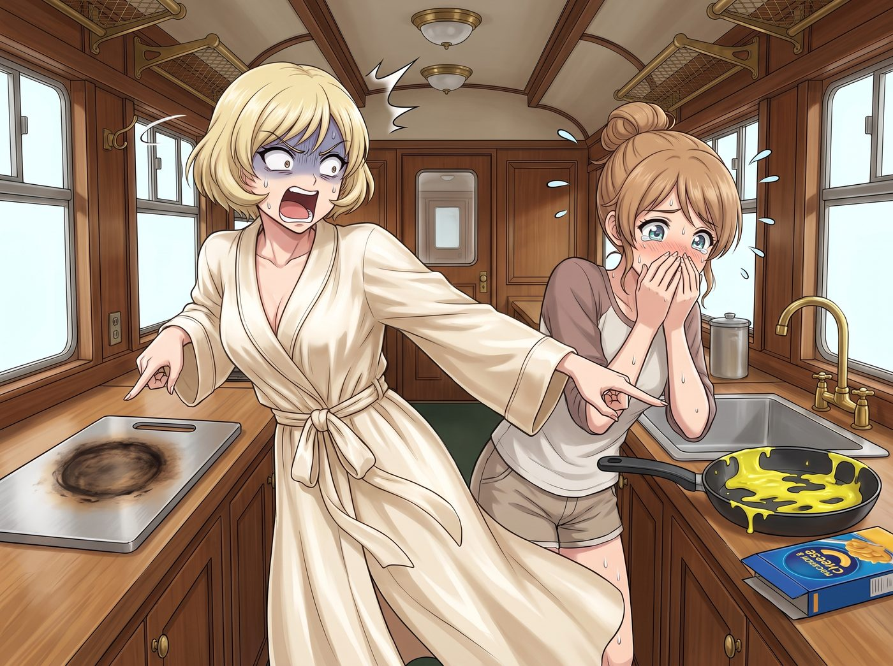
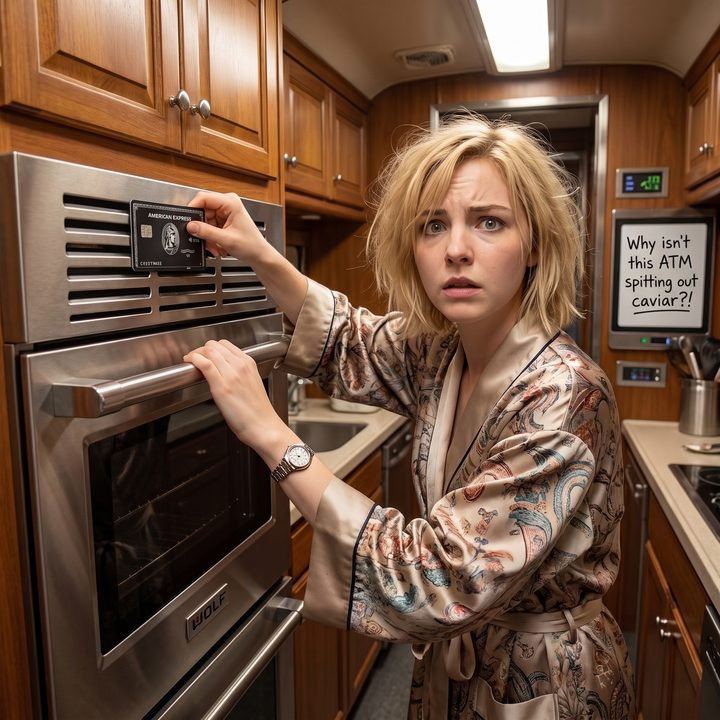
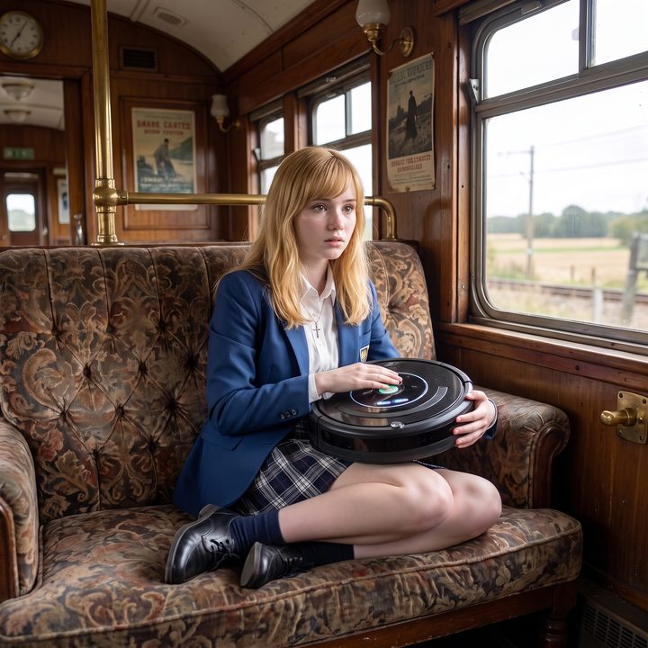
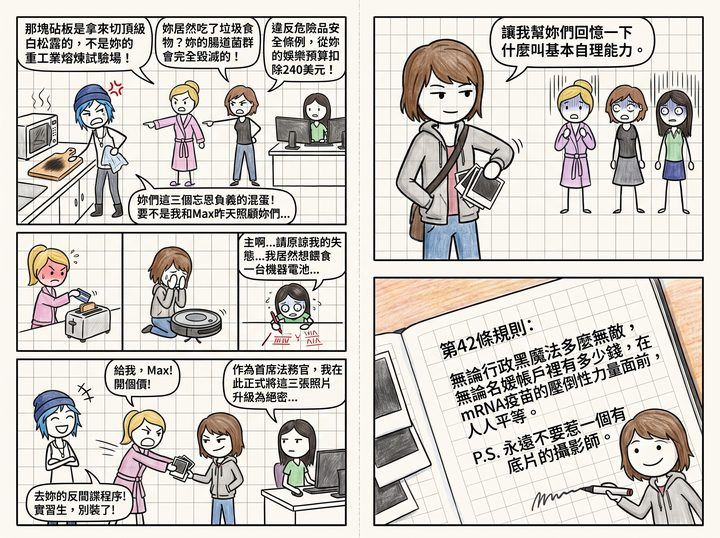

底片反殺




星期三的早晨，奧林匹亞半島難得迎來了久違的陽光。
經過一整夜的睡眠，mRNA疫苗引發的腦霧猶如一場荒誕的夢境，從三位精英的大腦中徹底消散了。她們神清氣爽地走出房間，大腦皮層的邏輯運算能力和階級意識重新回歸到了滿血狀態。
然後，她們看到了廚房裡的災難。
一、忘恩負義的指控
「Chloe！Max！」Victoria 穿著一塵不染的真絲晨袍，尖叫聲幾乎要震碎車廂的玻璃。她指著那塊昂貴的德國不鏽鋼砧板，上面有一個清晰的、被攝氏兩千五百度高溫噴槍燒出來的漆黑烙印。「妳們對我的廚房做了什麼？！那是用來切頂級白松露的砧板，不是妳們用來進行重工業冶煉的試驗田！」
Kate 也捂著嘴，一臉心痛地看著水槽裡那個沾滿了螢光黃色起司醬的平底鍋，以及旁邊空掉的通心粉包裝盒。「噢，天哪……」Kate 溫柔的聲音裡帶著強烈的譴責，「妳們居然吃了那種充滿人工色素和防腐劑的垃圾食物？妳們的腸道菌群會被徹底摧毀的！我才病了一天，妳們就放棄了對生命的尊重嗎？」
而最致命的打擊，來自於已經重新坐在多螢幕工作站後的 Lily。
「根據營地物資損耗日誌，」Lily 推了推圓框眼鏡，眼神猶如冰冷的掃描器，「昨天下午，兩位在未經授權的情況下，擅自啟用了戰術金屬熔接器來加熱一片價值不到五十美分的白吐司。這不僅違反了聯邦危險品安全操作條例，還浪費了大量軍用高能燃氣。我需要從妳們下個月的娛樂預算中扣除兩百四十美元，用以平帳。」
昨天還像難民一樣在地上啃熱狗的 Chloe，此刻正站在流理台前，被這三個剛恢復神智的傢伙劈頭蓋臉地訓斥，氣得額頭上的青筋都要爆出來了。
「妳們這三個忘恩負義的混蛋！」Chloe 咬牙切齒地揮舞著抹布，「昨天如果不是老娘和 Max 照顧妳們，妳們三個現在還在跟電器談戀愛呢！現在腦子清醒了，居然敢反過來教訓我們？！」
「Chloe，請注意妳的措辭。」Victoria 傲慢地抬起下巴，「我完全不記得昨天發生了什麼。我只知道，我現在看到的是兩個缺乏基本生活自理能力的野生動物，在糟蹋我的高級設備。」
二、荷官發牌
「哦？完全不記得是吧？」一直默默站在角落裡的 Max，突然開口了。她的聲音不大，卻帶著一種絕對的自信。
Max 緩緩將手伸進牛仔褲的口袋裡，掏出了一疊厚厚的、邊緣還帶著顯影藥水氣味的寶麗來相紙。她走到露營桌前，像個荷官發牌一樣，將那幾張照片啪、啪、啪地拍在了桌面上。
「那讓我來幫妳們回憶一下，什麼叫做基本生活自理能力。」
車廂裡的空氣，在照片落桌的那一瞬間，徹底凝固了。
三、找洞鑽的三人
Victoria 死死盯著第一張照片。照片裡的她，正穿著睡袍，手裡攥著一張百夫長黑卡，姿態扭曲地試圖把它塞進烤箱的散熱孔裡，臉上的表情清澈而愚蠢。
名媛的臉唰地一下白了，然後迅速漲成了豬肝色。她那不可一世的高傲，在絕對的物理證據面前，碎成了一地玻璃渣。
Kate 則雙手捂住滾燙的臉頰，看著自己抱著掃地機器人猶如抱著聖嬰般的慈悲表情，羞愧得恨不得立刻在車廂地板上挖個洞鑽進去。「主啊……請原諒我的失態……我居然想給一台機器餵電池……」
而最精彩的，是 Lily。這位永遠波瀾不驚的行政黑魔法師，在看到自己用紅筆在筆記本上瘋狂計算羅馬數字圓周率的照片時，敲擊鍵盤的手指出現了長達三秒鐘的停頓。她那雙平靜的眼睛裡，罕見地閃過了一絲被自己蠢到的震驚。
四、誰才是野生動物
「現在，」Chloe 雙手抱胸，嘴角咧出了一個極度囂張的龐克笑容，彷彿贏得了世界盃冠軍，「誰才是野生動物？誰才是需要被照顧的低能兒？大小姐，妳的烤箱昨天給妳吐魚子醬了嗎？！」
Victoria 羞憤欲絕地伸出手，想要去搶桌上的照片：「把它給我！Max！開個價！這張照片絕對不能流出這個車廂！」
「不行哦。」Max 輕巧地將照片收回手裡，動作敏捷，「這可是我作為聯邦戰術視覺紀錄員的核心資產。」
就在這時，Lily 迅速調整了狀態。她推了推圓框眼鏡，試圖用最後的行政尊嚴來力挽狂瀾。
「Max 學姐，」Lily 的聲音依然軟糯，但語速明顯比平時快了兩成，「根據保密協議，這幾張照片涉及了本營地高階人員的神經戰術測試機密。我現在以首席法務官的身分，正式將這三張照片的保密級別提升為絕密。請您立刻將其交還給我進行銷毀，否則我將不得不對您啟動反間諜調查程序。」
「去妳的反間諜程序！」Chloe 毫不客氣地打斷了她，笑得肚子都疼了，「實習生，別裝了！妳的羅馬數字算到小數點後幾位了？國稅局給妳免稅了嗎？」
Lily 咬著下唇，罕見地沒有反駁。她默默地轉過身，打開了一個空白的試算表，似乎是想用工作來掩飾自己這輩子最大的行政污點。
五、規則第四十二條
看著這三個平時高高在上、此刻卻啞巴吃黃連、恨不得找洞鑽的精英，Max 覺得昨天晚上那頓起司通心粉帶來的腸胃不適，瞬間全都痊癒了。
她將那幾張價值連城的寶麗來照片小心翼翼地夾進自己的手帳本最深處，然後拿起馬克筆，心情愉悅地寫下：
『規則第四十二條：無論行政黑魔法有多麼不可戰勝，無論名媛的卡裡有多少錢，在mRNA疫苗的降維打擊面前，人人平等。P.S. 永遠不要惹一個手裡有底片的攝影師。』